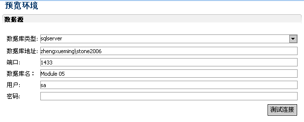
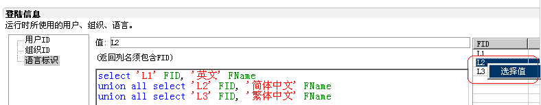
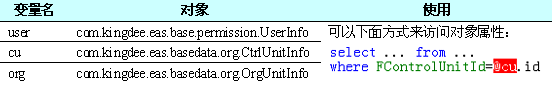

调试运行环境
文件：runtime.env，在subjects根目录下，所有subject共享一个。
作用：模拟eas用户登陆，以便服务器获得用户的相关信息：登陆用户、用户选择的组织(相当于eas中的切换组织，eas中登陆用户使用缺省组织，而在这里必须设置登陆后选择的组织)、语言。
数据源驱动，内置强制使用ksql驱动。

登陆信息设置：
为方便使用，提供了即时查询，选择功能。

登陆信息在sql中的使用
